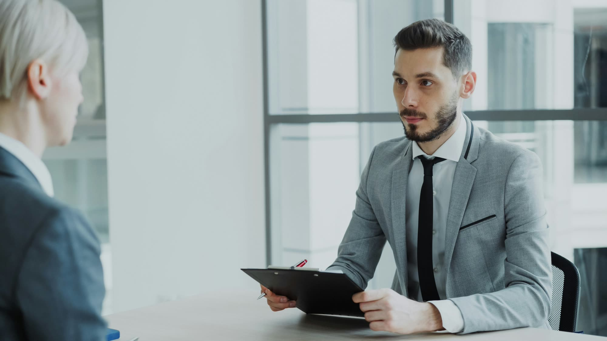
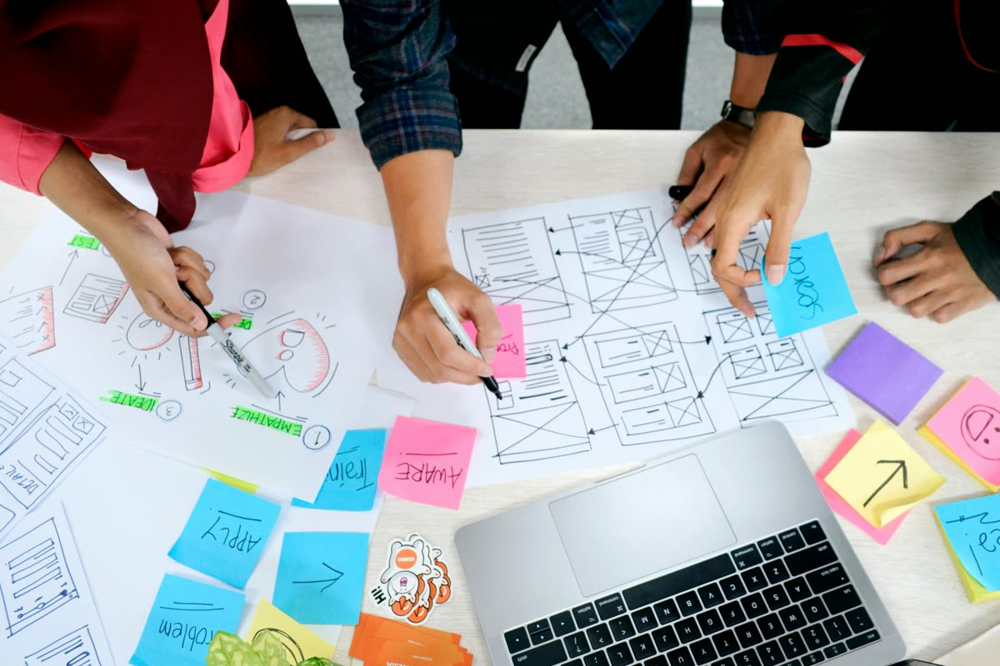

Research
Studying real conditions, not theoretical assumptions
ARIES gathers direct insight from individuals, communities, and institutions, exploring patterns in behaviour, perception, systems, and societal gaps that conventional studies often overlook.
Publications
Formal research output — citation-ready entries with authors, dates, and abstracts, for readers who want the underlying study.
Browse publications
Methodology
How ARIES designs studies, collects evidence in the field, and moves from raw data to a finding we stand behind.
See our methodologyFocus areas
Where our research is currently directed
Perceptions of education
How students and teachers describe the purpose of learning in their own words — and where that departs from the outside assumptions usually made about it.
Innovation & critical thinking
Behavioural patterns and learning gaps that shape whether students build independent thought, or default to memorising for the exam.
Job-oriented mindset
Whether education is understood mainly as a route to employment, or as a broader tool for personal development — and how that shapes motivation.
These three lenses come directly from the pilot’s founding proposal; specific district- or institution-level fields will be confirmed once Phase 1 sites are selected.
Objectives